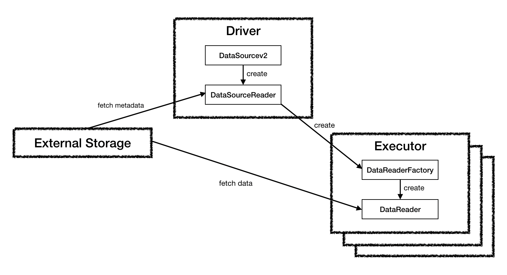

Apache Spark - Data Source V2(1)
을 참고하여 작성하였습니다.
Data Source API V2
What is Data Source API?
Storage System에(서) 어떻게 데이터를 쓰고 읽는지 정의하는 API이다. 예를 들어 Hadoop는 InputFormat/OutputFormat, Hive는 Serde, Presto는 Connector 등의 Data Source API를 가지고 있다.
Anciet Age: Custom RDD
rdd.mapPartitions{ it =>
//custom logic to write to external storage
}Spark의 RDD API를 사용하던 시절에는 위와 같이 RDD의 mapPartitions 함수를 호출하여 Partition 단위로 데이터를 외부 시스템에 쓰기도 했다.
New Requirements When Switching to Spark SQL
데이터를 읽고 쓸 때는 다음과 같은 요구사항들이 있을 수 있다.
How to read data?
- 분산 환경에서 데이터를 병렬로 읽어들이는 방법
- 읽을 때 필터를 적용하여 필요한 데이터만 읽어들이는 방법
- aggregate, limit 등의 연산들의 속도를 향상시키는 방법
- Spark의 Data Encoding을 통해 데이터를 변환하는 방법
- 읽기에 관한 추가 정보(Data statistics, Data partitioning 등)를 Spark에 전달하는 방법
- Structured Streaming 지원
How to write data?
- 분산 환경에서 데이터를 병렬로 기록하는 방법
- 데이터 쓰기 연산을 atomic하게 만드는 방법
- 쓰기 실패가 발생했을 경우 처리하는 방법
- Spark의 Data Encoding을 통해 데이터를 변환하는 방법
- Structured Streaming 지원
What’s the design of Data Source API V2?
내용이 많아 이 포스트에는 Read만 기록하려 한다. Write는 다른 포스트에서 기록할 예정이다.
또한 Spark 2.3 버전과 2.4 버전에서 DataSourceV2 API의 인터페이스가 달라졌는데, 이 포스트에서는 2.3 버전 기준으로 설명하도록 한다.

DataSourceV2(org.apache.spark.sql.sources.v2.DataSourceV2)
public interface DataSourceV2 {}DataSourceAPI V2를 지원하기 위한 기본 인터페이스. 아무 함수도 존재하지 않는 인터페이스이며, 해당 인터페이스에 ReadSupport나 WriteSupport 등의 Trait을 믹스인(Mix-in) 하여 사용한다.
ReadSupport(org.apache.spark.sql.sources.v2.ReadSupport)
public interface ReadSupport extends DataSourceV2 {
DataSourceReader createReader(DataSourceOptions options);
}데이터 읽기를 지원하는 DataSource가 구현해야하는 인터페이스이다. DataSourceV2 인터페이스에 믹스인해서 사용한다.
구현해야하는 함수는 createReader이며, 해당 함수의 반환형인 DataSourceReader는 실제로 데이터를 읽는 역할을 하지는 않고, 읽고자 하는 데이터를 스캔(예를 들어 하둡 파일인 경우 하둡 파일 블록이 몇개인지 확인하는)하는 역할을 수행한다.
DataSourceReader(org.apache.spark.sql.sources.v2.reader.DataSourceReader)
public interface DataSourceReader {
StructType readSchema();
List<DataReaderFactory<Row>> createDataReaderFactories();
}위의 ReadSupport의 createReader 함수가 반환하는 객체의 클래스이다.
DataSourceReader의 읽기 최적화
DataSourceReader 인터페이스는 데이터 스캔 속도를 높이기 위해 다양한 쿼리 최적화 인터페이스와 믹스인할 수 있다. 실제 스캔 로직은 DataReaderFactory에게 위임된다.
주요 쿼리 최적화 인터페이스는 다음과 같이 3가지가 존재한다.
- Operators push-down: Filter Pushdown, Project Pushdown(Required field push-down, a.k.a column pruning)…
- Information Reporting: Statstics reporting, Ordering Reporting 등
- Special scans: columnar scan, unsafe row scan…
Spark에서 데이터를 읽을 때는 다음과 같은 순서로 진행된다.
- DataSource가 지원하는 Push Down 최적화를 모두 적용/수행
- 추가적인 최적화를 적용하기 위해 DataSource의 정보 수집(Statistics, Ordering)
- 데이터 스캔
- 실제 데이터 읽기
다만 위와 같은 최적화 인터페이스의 수행이 실패할 경우, Spark Action이 실패하므로 주의해야 한다.
DataSourceReader의 함수
readSchema
읽을 데이터의 스키마를 반환한다. Column pruning이나 다른 최적화가 발생하는 경우에는 실제 스키마와 다를 수 있다.
createDataReaderFactories
데이터를 실제로 읽는 DataReader 객체를 생성하는 DataReaderFactory 객체를 반환한다.
데이터를 구성하는 파티션 1개 당 1개의 DataReaderFactory가 생성되기 때문에, 이 함수에서 반환하는 DataReaderFactory의 수는 읽을 파티션의 수와 동일해야 한다.
또한 DataSourceReader에 최적화 인터페이스가 적용된 경우 Full Scan을 수행하지 않을 수도 있다.
DataSourceV2를 활용하여 In Memory DataSource 만들기
Spark의 DataSourceV2 API를 이용하여 In Memory DataSource를 읽어보도록 한다.
Library
우리가 읽을 가상의 DataSource인 Library이다. Library는 아래와 같은 속성을 가진다.
- Library는 1개 이상의 책 시리즈을 보유하고 있다.
- 각 책 시리즈는 1권 이상의 책으로 이루어져 있다.
- 각 책은 1장 이상의 페이지로 구성되어 있다.
- 각 페이지는 페이지 번호와 내용으로 구성되어 있다.
위 속성을 통해 아래와 같은 클래스들을 도출하였다.
Page
case class Page(page: Int, content: String)Book
case class Book(name: String, volume: Int, pages: List[Page])Library
import scala.collection.mutable
object Library {
var _library: Library = new Library()
def getLibrary(): Library ={
_library
}
}
class Library {
val bookSheleves: mutable.Map[String, List[Book]] = mutable.Map()
def addBookSeries(name: String, bookSeries: List[Book]): Unit =
bookSheleves += (name -> bookSeries)
def getBookSeries(name: String): List[Book] = {
if(bookSheleves.contains(name))
bookSheleves(name)
else
throw new IllegalArgumentException(s"No name book: ${name}")
}
}Inmemory DataSource API
Library 를 읽기 위한 BookDataSource API는 다음과 같은 클래스로 구성되어 있다.
BookDataSource:Library에서 지정된 책을 읽기 위한DataSource. 읽기 전용으로 구현.BookDataSourceReader:Library에 저장된 책의 스키마 정보와 저장된 책의 파티션을 읽을BookReader를 생성할 수 있는BookReaderFactory객체 목록을 반환하는 메서드를 제공한다. 지정된 책 시리즈가 몇 권의 책(파티션)으로 이루어져 있는지 추론할 수 있다.BookReaderFactory: 지정된 책을 읽을 수 있는BookReader객체를 반환한다.BookReader: 지정된 책을 Page 단위로 읽을 수 있는 객체이다.
각 클래스는 아래와 같으며, 전체 코드는 Github 에서 확인할 수 있습니다.
BookDataSource
package com.leeyh0216.spark.example.datasource.inmemory
import com.leeyh0216.spark.example.datasource.library.Library
import org.apache.spark.sql.sources.v2.reader.DataSourceReader
import org.apache.spark.sql.sources.v2.{DataSourceOptions, DataSourceV2, ReadSupport}
import org.slf4j.LoggerFactory
/**
* 커스텀 데이터소스인 BookDataSource 클래스.
* 읽기 전용 DataSource이기 때문에 ReadSupport만 상속하였다.
*/
class BookDataSource extends DataSourceV2 with ReadSupport{
val logger = LoggerFactory.getLogger(classOf[BookDataSource])
override def createReader(options: DataSourceOptions): DataSourceReader = {
val bookName = options.get("bookName").get()
new BookDataSourceReader(Library.getLibrary(), bookName)
}
}BookDataSourceReader
package com.leeyh0216.spark.example.datasource.inmemory
import java.util
import com.leeyh0216.spark.example.datasource.library.Library
import org.apache.spark.sql.Row
import org.apache.spark.sql.sources.v2.reader.{DataReaderFactory, DataSourceReader}
import org.apache.spark.sql.types.{IntegerType, StringType, StructType}
import org.slf4j.LoggerFactory
/**
* DataSourceReader를 상속한 BookDataSourceReader 클래스.
* Library에 있는 BookShelves에서 특정 Book을 읽는 것을 지원한다.
*
* @param library Library 객체
* @param name 읽을 책 이름
*/
class BookDataSourceReader(library: Library, name: String) extends DataSourceReader {
val logger = LoggerFactory.getLogger(classOf[BookDataSourceReader])
val booksToRead = library.getBookSeries(name)
override def readSchema(): StructType =
new StructType()
.add("name", StringType)
.add("volume", IntegerType)
.add("page", IntegerType)
.add("content", StringType)
override def createDataReaderFactories(): util.List[DataReaderFactory[Row]] = {
val bookReaderFactories = new util.ArrayList[DataReaderFactory[Row]]()
booksToRead.foreach(book => bookReaderFactories.add(new BookReaderFactory(book)))
bookReaderFactories
}
}BookReader
package com.leeyh0216.spark.example.datasource.inmemory
import com.leeyh0216.spark.example.datasource.library.Book
import org.apache.spark.sql.Row
import org.apache.spark.sql.sources.v2.reader.DataReader
import org.slf4j.LoggerFactory
/**
* 실제로 Book을 읽어들이는 BookReader 클래스.
* Executor에서 동작하게 된다.
* @param book 읽어야 할 Book 객체
*/
class BookReader(book: Book) extends DataReader[Row]{
val logger = LoggerFactory.getLogger(classOf[BookReader])
val pageIterator = book.pages.iterator
val name = book.name
val volume = book.volume
logger.info(s"Book reader initialized. Name: ${book.name}, Volume: ${book.volume}")
override def next(): Boolean = {
pageIterator.hasNext
}
override def get(): Row = {
val page = pageIterator.next()
Row.apply(name, volume, page.page, page.content)
}
override def close(): Unit = {
logger.info(s"Book closed. Name: ${book.name}, Volume: ${book.volume}")
}
}BookReaderFactory
package com.leeyh0216.spark.example.datasource.inmemory
import com.leeyh0216.spark.example.datasource.library.Book
import org.apache.spark.sql.Row
import org.apache.spark.sql.sources.v2.reader.{DataReader, DataReaderFactory}
/**
* Book 객체를 읽을 BookReader 객체를 생성한다.
* @param book 읽어야 할 Book 객체
*/
class BookReaderFactory(book: Book) extends DataReaderFactory[Row]{
override def createDataReader(): DataReader[Row] = new BookReader(book)
}How to use?
구현한 데이터소스는 다음과 같이 이용할 수 있다.
val harryPotter = spark.read.format(inmemoryDataSourceName).option("bookName", "{책이름}").load()
harryPotter.show(false)}
관련 테스트 코드는 아래와 같으며, 전체 코드는 Github에서 확인할 수 있다.
package com.leeyh0216.spark.example.datasource.inmemory
import java.util.UUID
import com.leeyh0216.spark.example.datasource.library.{Book, Library, Page}
import org.apache.spark.sql
import org.junit.{Assert, Test}
import org.slf4j.LoggerFactory
import scala.util.Random
class InmemoryDataSourceTest {
val logger = LoggerFactory.getLogger(classOf[InmemoryDataSourceTest])
val library = Library.getLibrary()
val harryPotterVolumes = 7
val harryPotterBookName = "Harry Potter"
val harryPotter = (1 to harryPotterVolumes).map(volume => {
val lastPage = new Random().nextInt() % 300
val pages = (1 to lastPage).map(page => Page(page, UUID.randomUUID().toString))
Book(harryPotterBookName, volume, pages.toList)
})
val sumOfHarryPotterPages = harryPotter.map(book => book.pages).map(pages => pages.length).sum
library.addBookSeries(harryPotterBookName, harryPotter.toList)
val spark = new sql.SparkSession.Builder().master("local[*]").config("spark.driver.host", "localhost").getOrCreate()
val inmemoryDataSourceName = classOf[BookDataSource].getName
@Test
def testGetNumPartitions(): Unit ={
val harryPotters = spark.read.format(inmemoryDataSourceName).option("bookName", "Harry Potter").load()
Assert.assertEquals(harryPotterVolumes, harryPotters.rdd.getNumPartitions)
}
@Test
def testCount(): Unit ={
val harryPotters = spark.read.format(inmemoryDataSourceName).option("bookName", "Harry Potter").load()
Assert.assertEquals(sumOfHarryPotterPages, harryPotters.count())
}
}